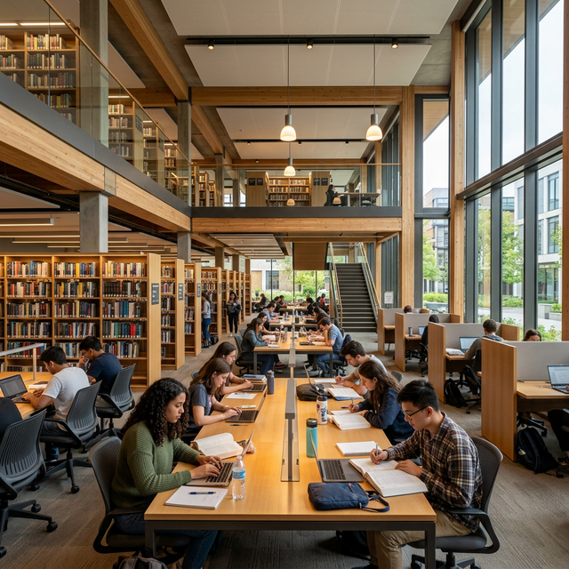
Perpustakaan Pusat
Gedung perpustakaan 6 lantai dilengkapi dengan ribuan koleksi buku, jurnal digital, ruang diskusi interaktif, dan free Wi-Fi.
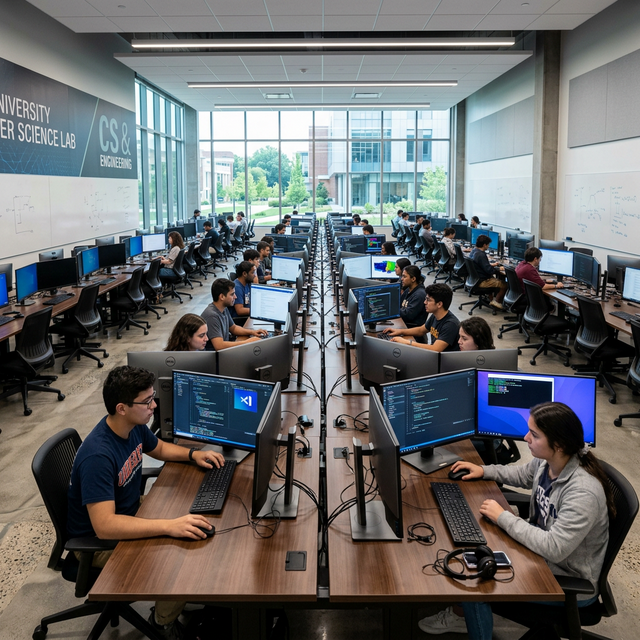
Laboratorium Komputer
Laboratorium modern yang tersertifikasi untuk ujian kompetensi TI, pengembangan software, dan desain multimedia.
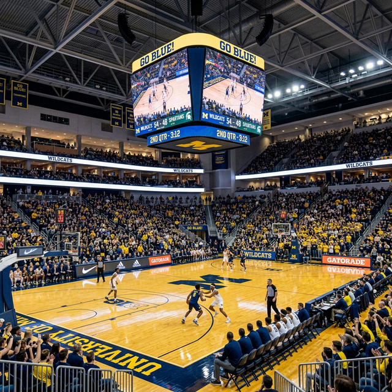
Gelora Prof. Sudarto, S.H.
Gedung olahraga indoor multifungsi yang digunakan untuk olahraga mahasiswa, wisuda, dan event-event besar kampus.
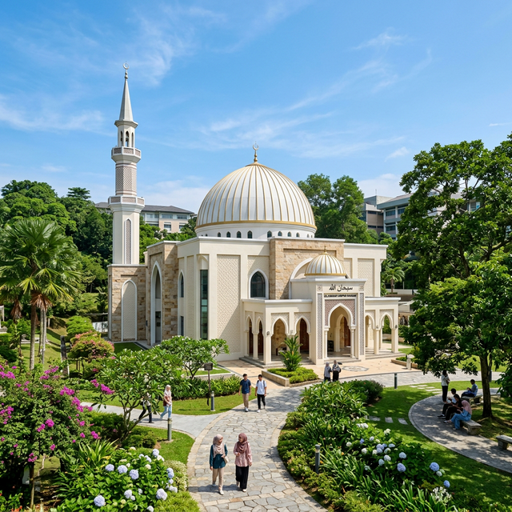
Masjid Baitur Rasyid
Masjid besar kampus yang nyaman dilengkapi AC untuk kegiatan ibadah utama dan kajian kerohanian Islam mahasiswa.
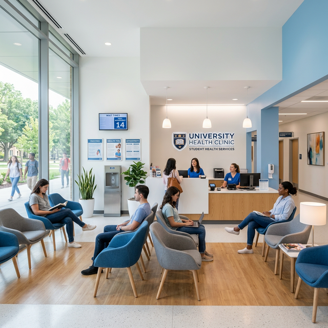
Klinik Kesehatan (USM Medical)
Fasilitas pelayanan kesehatan pertama untuk mahasiswa dan staf yang berjaga dengan dokter serta paramedis profesional.
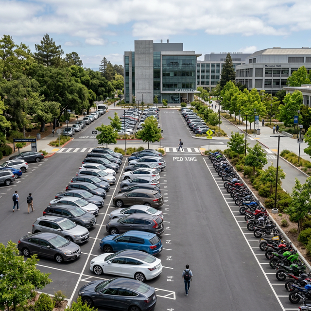
Area Parkir Terpadu
Fasilitas lahan parkir yang luas, rindang, dan aman dengan sistem keamanan 24 jam penuh untuk kendaraan mahasiswa.
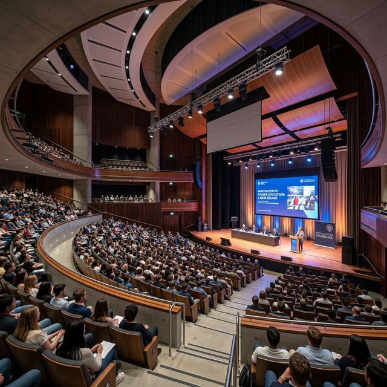
Gedung Auditorium
Auditorium modern berskala besar untuk seminar nasional, konferensi internasional, dan berbagai pertunjukan seni.
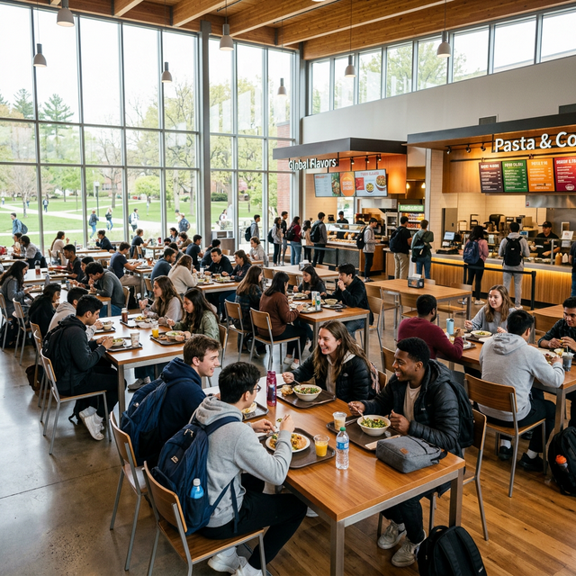
Food Court Mahasiswa
Kantin yang bersih dan luas dengan berbagai pilihan kuliner lezat yang ramah kantong bagi mahasiswa.
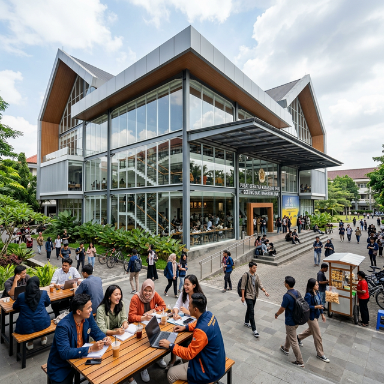
Pusat Kegiatan Mahasiswa
Gedung Student Center (SC) yang menjadi pusat kegiatan berbagai Unit Kegiatan Mahasiswa (UKM) dan organisasi kemahasiswaan.
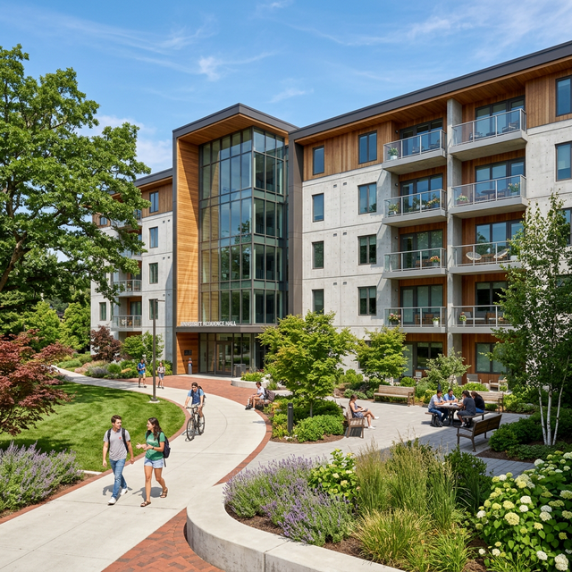
Asrama Kampus
Fasilitas hunian mahasiswa (Rusunawa) yang nyaman, bersih, dan aman, dikhususkan bagi mahasiswa dari luar kota.
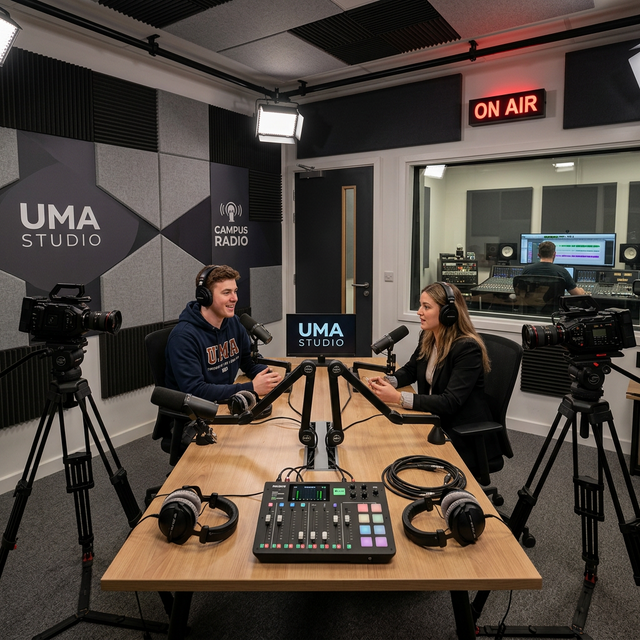
Studio Penyiaran & Podcast
Studio multimedia pro untuk praktik penyiaran radio kampus, pembuatan video edukasi, kreatifitas, dan podcast.
Co-working Space & Lounge
Ruang diskusi santai dengan fasilitas internet berkecepatan tinggi yang dirancang untuk mendukung kolaborasi mahasiswa.